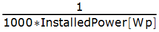
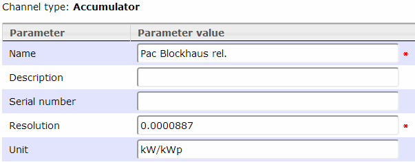
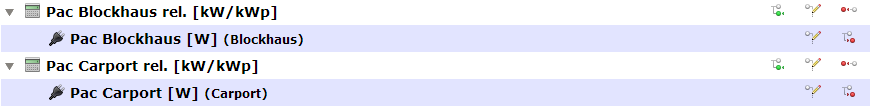
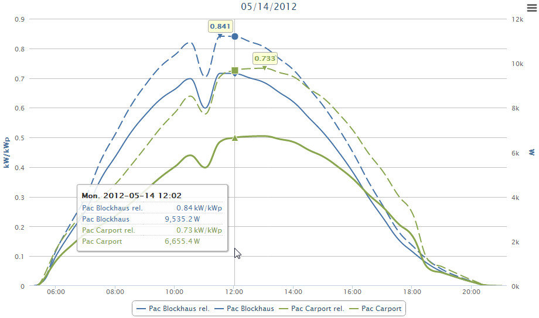

If you have for example more than one solar plant/inverter with different size/orientation, the absolute power values in watt are not so helpful for comparison.
A common unit for comparison is kilo watt per kilo watt peak.
So therefor you have to transform the watt data from a power sensor into kilo watt per kilo watt peak.
Setup
● A power sensor (with unit watt in this example)
● A "proxy" channel for calculation
I use for this a accumulator channel type, which works also with only one sub channel assigned!
To force the proxy to make the calculation, a proper resolution must be set.
● Inverter 1 installed power: 11.28 kWp
● Inverter 2 installed power: 9.18 kWp
Transform watt into kilo watt per kilo watt peak: 
Values for the resolution:
● Inverter 1: 0.0000887
● Inverter 2: 0.000109
Channel definition

Build a proper channel hierarchy:

Now you can compare very different things on a common basis.
Chart
(Blockhaus (blue): East and South, Carport (green): East and West)

Created with the Personal Edition of HelpNDoc: Single source CHM, PDF, DOC and HTML Help creation